<!DOCTYPE html>

<html>

<head>

<title>CS296 Project Report</title>

<style>

h1{
font-family:Arial,Helvetica,sans-serif;
color:red;
text-align:center;
margin-top:5%;
margin-bottom:5%;
}

h2{
font-family:Arial,Helvetica,sans-serif;
color:blue;
text-align:center;
margin-top:2%;
margin-bottom:2%;
}

h3{
font-family:Arial,Helvetica,sans-serif;
color:blue;
margin-left:10%;
}

p{
font-family:Arial,Helvetica,sans-serif;

text-align:justify;
margin-top:1%;
margin-bottom:1%;
margin-left:10%;
margin-right:10%;
}

img{
display:block;
margin-left:auto;margin-right:auto;
}

table, th, td{

font-family:Arial,Helvetica,sans-serif;
text-align:left;
color:brown;
border:1px solid black;
border-collapse:collapse;margin-left:auto;
margin-right:auto;
}

</style>

</head>

</html>

<body>

<h1>CS 296 Course Project - Escalator Simulation</h1>

<p>
Group 22: <br>
Arpit Singh <br>
120050037 , arptisingh26@cse.iitb.ac.in  <br>
Harish Koilada <br>
120050038 , rimcoharish@cse.iitb.ac.in  <br>
Nishanth Koushik <br>
120050041 , nnk@cse.iitb.ac.in <br>
</p>

<h2>Introduction</h2>

<p>
In this report, we analyse our simulation of an escalator, created in Box2D <br>
We first present a comparison of our original design and the end result, and talk about and try to explain some of the differences between the two. We then talk about our end result in some detail, and examine its performance by studying the data obtained during the timing and profiling of the source code. <br>
</p>

<h2>Original conception vs end result</h2>

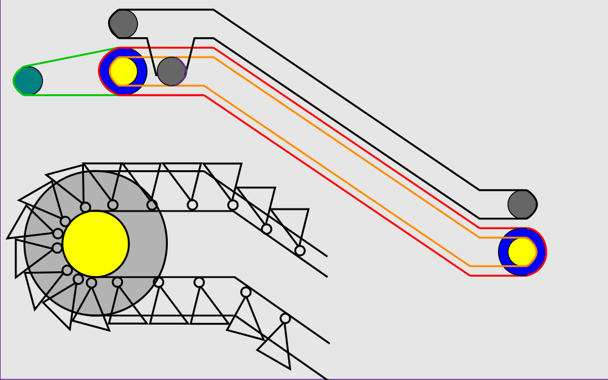

<p>
Our original design is a more or less faithful reproduction of the actual design of an escalator, with the exception of the steps. An actual escalator uses a rather sophisticated mechanism to maintain its structure, which had to be simplified for the purposes of our implementation. <br>
</p>

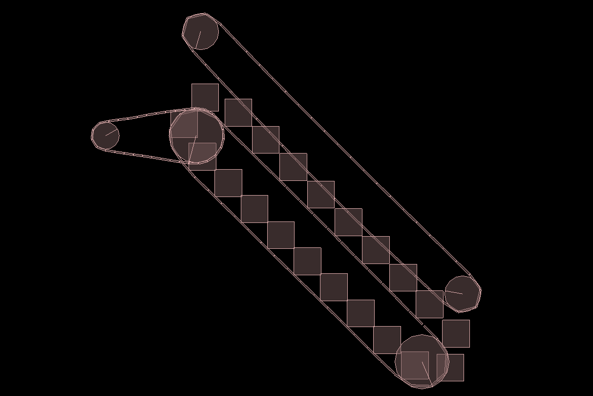

<p>
In our final simulation, we have tried to stick to out original conception as far as possible. The handrail gear is motorised and self-driven, as opposed to being driven by the step chain gear, as is actually the case. This was done to avoid interaction between the belt connecting the two and the belt connecting the main motor to the step chain gear, which would otherwise have been difficult to resolve. <br>
We have also left out the horizontal sections on both ends of the escalator, as we were unable to successfully wrap a belt around the compound structure without it disintegrating under even slight stress in the course of its motion. <br>
Perhaps the most notable change coming from the original design to the final creation is the addition of the supporting gears. Prior to this change, the simulation was performing poorly, with the system taking a long time to stabilise on execution, and the simulation lagging frequently. The system was also extremely sensitive to the simulation metaparameters, and would break down if these were altered even slightly. <br>
</p>


<p>
We decided to add supporting gears to hold the step chain and handrail in place. The improvement was substantial, with the system settling down much faster than before, and also performing more smoothly and robustly throughout. <br>
</p>

<h2>Design Analysis</h2>

<p>
Our escalator is driven by a motor which is connected to the top step chain gear. The bottom step chain gear is is driven by the top one. The top handrail gear is self-driven, and also drives the bottom one. <br>
Both the handrail and the step chain are built up using many small rectangular segments, attached to each other using revolute joints <br>
They were both built in four segments, two going over the top and bottom, and two going over either side, which were then affixed to each other as appropriate <br>
. <br>
The steps themselves are implemented as rectangular blocks affixed to their respective step chain segments. <br>
The belts are somewhat slack at the start of the simulation, but stabilise with time. The simulation is occasionally jittery as well, but we have done our best to make the overall simulation as smooth as possible, by optimising various parameters associated with the design, such as the size and number of the steps and chain segments. <br>
The supporting gears move with the belt by virtue of friction. They help maintain the shape of the belt and keep it in uniform motion. They have been placed uniformly throughout the length of the escalator. <br>
</p>

<h2>Timing</h2>

<h3>Plot 1</h3>

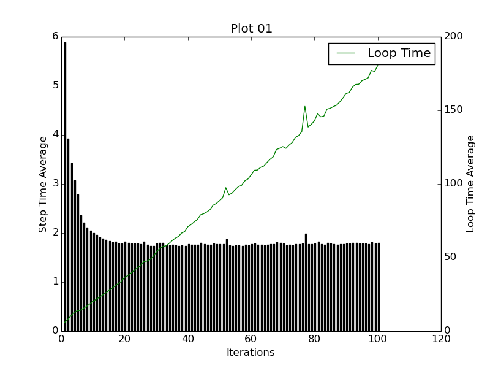

<p>
This plot is a graph of average step time and average loop time versus the number of iterations (n). <br>
The loop time is equal to the step time (which is independent of n), times n. It is thus expected to grow linearly with n. The graph shows that this is indeed more or less the case. <br>
We further expect the slope of this line to be equal to the step time. The slope is approximately equal to (180 ms) / 100, which is 1.8 ms. <br>
The step time is expected to be independent of n. The graph, however, seems to indicate a downward trend. We think that this is because the values of n for which data was obtained are too small. We further think that as the value of n is increased, the step time value will stabilise, presumably at a value close to 1 ms. We can see from our graph that this does indeed seem to be the case. <br>
Note that when n = 1, we should obtain roughly equal values for step and loop times, as we do. <br>
</p>

<h3>Plot 2</h3>

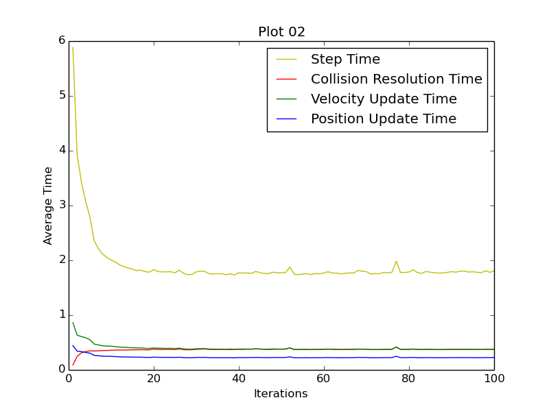

<p>
This plot graphs the averages of step time, collision resolution time, velocity update time, position update time, and the sum of the last three quantities. <br>
We observe, as expected, that the averages remain more or less constant as n increases (barring anomalies at small values of n), and that the sum of the final three quantities is still somewhat less than the step time, which would include some additional overheads as well. <br>
It is also understandable that the velocity and position update times are nearly the same, and that they are both somewhat less than the collision resolution time. This is because the computation of the updated simulation parameters is part of collision resolution, and the update times count only the assignment of new values to these parameters. <br>
</p>

<h3>Plot 3</h3>

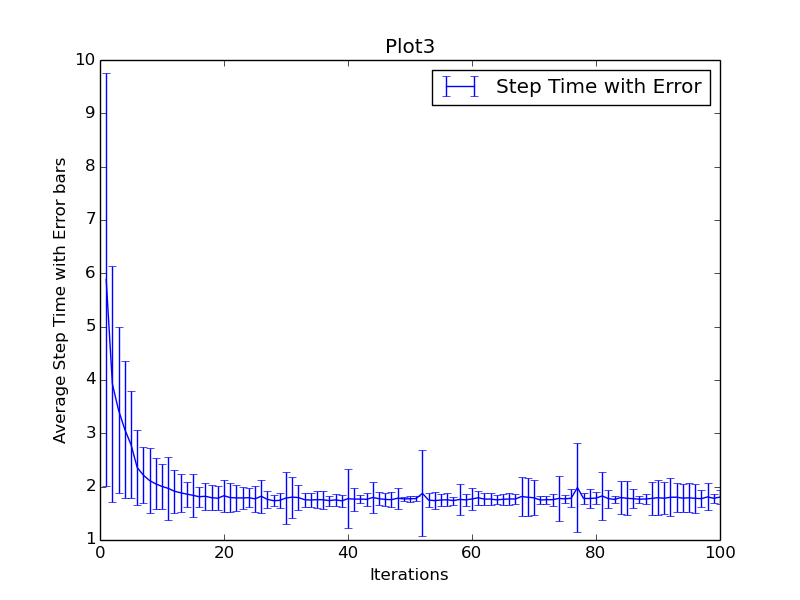

<p>
This is a graph of step time average (in ms), against the number of iterations, plotted with error bars. It is interesting to see that the size of the error decreases as the number of iterations is increased. <br>
</p>

<h3>Plot 4</h3>

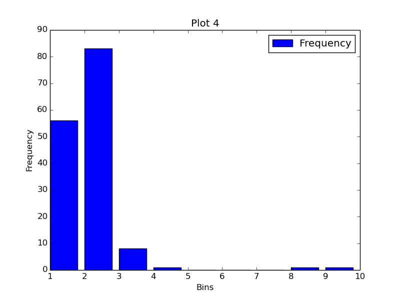

<p>
This plot, graphing frequency and cumulative frequency of step times, peaks at a step time of about 1.78 ms. Our step time data, for these small values of n, does seem to be accumulated around a value close to 1.8 ms. <br>
</p>

<h3>Plot 5</h3>

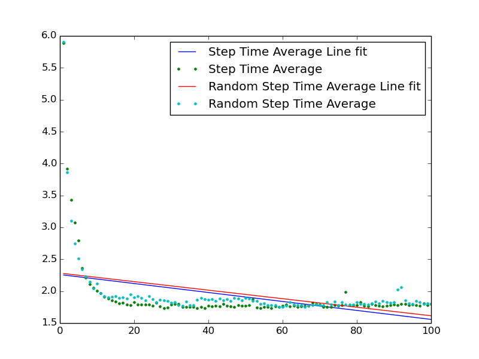

<p>
This plot constructs linefits for the average step time, plotted using both the entire data set, and a random subset. <br>
The linefit confirms the seeming downward trend that was observed for the step time. It is interesting to note that as the number of repetitions for a particular value of n is fairly large (150), the linefit for the random sample and the total set are very close to each other. <br>
</p>

<h3>Comparing time and gettimeofday()</h3>

<table>

<tr>
<th>Iterations</th>
<th>time</th>
<th>gettimeofday()</th>
</tr>

<tr>
<th>500</th>
<th>890 ms</th>
<th>891 ms</th>
</tr>

<tr>
<th>5000</th>
<th>8837 ms</th>
<th>8830 ms</th>
</tr>

<tr>
<th>50000</th>
<th>88151 ms</th>
<th>88159 ms</th>
</tr>

<tr>

</tr>

</table>

<p>
Note that gettimeofday() measures only the total loop time whereas time measures the total program execution time, which includes the sections of the program before and after the loop. <br>
</p>

<h2>Profiling</h2>

<p>
The profiler used for profiling is gprof <br>
</p>

<h3>Comparing execution time with and without optimisation</h3>

<table>

<tr>
<th>Iterations</th>
<th>Optimised with -O3</th>
<th>Optimised with -O2</th>
<th>Without Optimisation</th>
</tr>

<tr>
<th>50</th>
<th>90 ms</th>
<th>89 ms</th>
<th>148 ms</th>
</tr>

<tr>
<th>500</th>
<th>894 ms</th>
<th>924 ms</th>
<th>1519 m</th>
</tr>

<tr>
<th>5000</th>
<th>8769 ms</th>
<th>9057 ms</th>
<th>14786 m</th>
</tr>

<tr>

</tr>

</table>

<p>
The -On flag is used to specify the level of optimisation used in compiling the code. The default is -O0. We can clearly see the improvement made by using -O2 optimisation. However, we observe some more improvement when we use the -O3 flag instead of the -02 flag. <br>
</p>

<h2>Call Graphs</h2>

<h3>Debug-prof Call Graph for 500 iterations</h3>

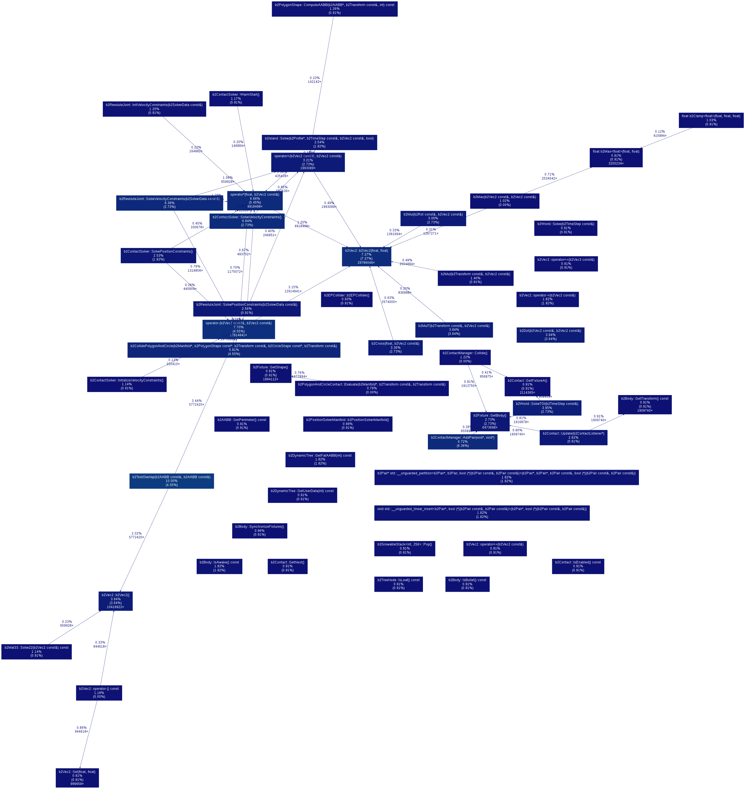

<h3>Debug-prof Call Graph for 5000 iterations</h3>

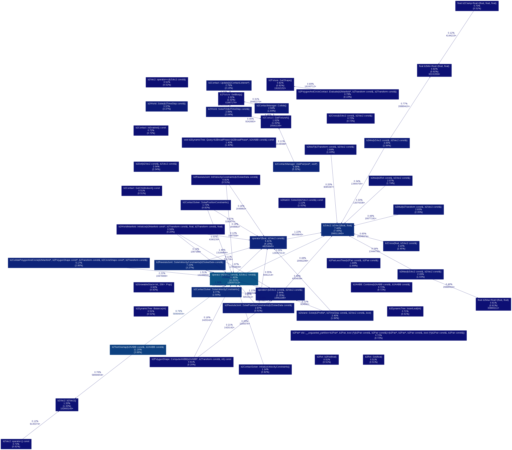

<h2>Performance Analysis</h2>

<h3>With optimisation flags</h3>

<p>
With optimisation flags, the call graph obtained is not accurate and hence we cannot make reasonable conclusions about the execution of the program. This is because the compiler compiles the program differently, meaning that the profiler is unable to obtain all the data it wants. Also, the connections between the various functions is not shown in the callgraph as the profiler is not able to keep track of all the function calls. But the trend of the time taken by the functions will be more or less the same as in the debug mode. <br>
</p>

<h3>Without optimisation flags</h3>

<p>
The call graph included above is of the debug-prof target for 500 iterations and for 5000 iterations. This makes the execution time fairly longer than that when run with optimisation flags. We observe from the above call graph that the function which takes up the most time is b2TestOverlap() followed by the arithmetic operator operator-()}.\ <br>
The above data helped us realise that most of the processing time was spent testing for overlap between objects. It was fairly clear to us that this was because of the handrail's supporting gears overlapping with the escalator's steps. We thus thought that we could improve our simulation's performance by moving the handrail supporting gears further up so as not to overlap with the escalator steps. When this change was made, we obtained the call graphs shown below, where, as we had predicted, the time taken for b2TestOverlap() had gone down, and operator-() now took the most time. <br>
</p>

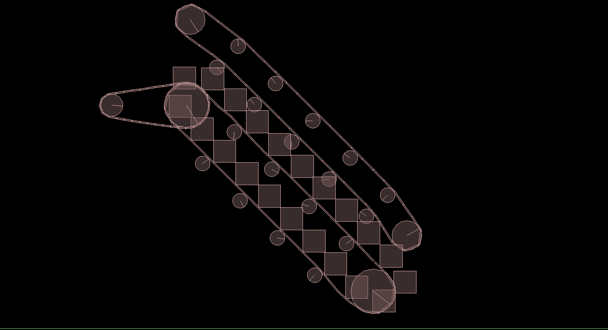

<h2>Call Graphs for improved simulation</h2>

<h3>Debug-prof Call Graph for 500 iterations</h3>

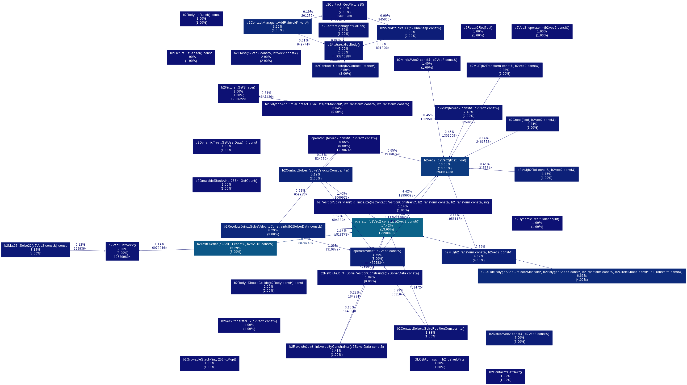

<h3>Debug-prof Call Graph for 5000 iterations</h3>

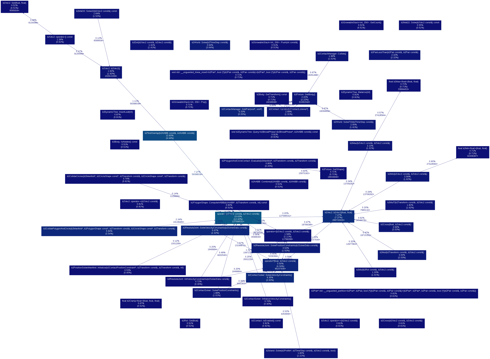

<h2>Conclusion</h2>

<p>
This completes our analysis of our simulation of an escalator in Box2D. The timing and profiling data reveal a lot of interesting details about the execution of the code, and we have attempted to understand some of them in the above sections. <br>
</p>

</body>